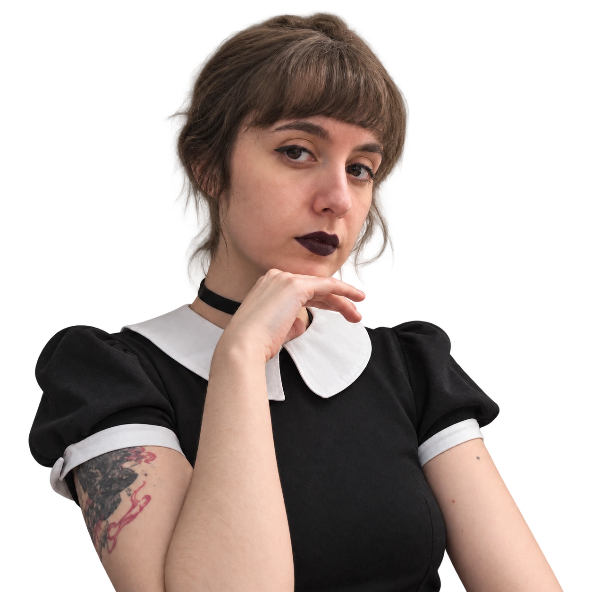
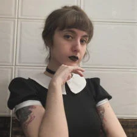

BRUNAFESTA.

Palavras, frames
& outros
universos.
Jornalista.
Editora de vídeo.
Curiosa por natureza.
Histórias que
saíram do papel.
Uma seleção do que escrevi, editei e produzi.
Do universo dos games à notícia do dia.
UM RECORTE DO PORTFÓLIO.
O arquivo.

Apuração na cabeça.
Cultura pop na veia.
Sou jornalista e editora de vídeo. Gosto de encontrar o fio da história — seja numa notícia, num jogo ou em alguns segundos de vídeo.
Me formei em Jornalismo pelo Mackenzie e fiz pós-graduação em Jornalismo em Plataformas Digitais na Cásper Líbero. Hoje trabalho de forma autônoma com edição de vídeo, com uma trajetória que também passa pela redação jornalística, publicidade e comunicação corporativa.
Já escrevi sobre games e animes na Black&CO, desenvolvi textos e campanhas na Human Link e atuei em assessoria de imprensa e comunicação institucional na 2M e Associados e na FapUnifesp. Na CNN Brasil, participei da apuração de fatos e da cobertura das eleições de 2022 durante meu estágio.
Vamos trocar uma ideiaCAMINHOS QUE FAZEM PARTE DA MINHA HISTÓRIA
O que também
me move.
Algumas histórias ficam com a gente
mesmo depois dos créditos.
- NA ESTANTE
- A Torre Negra Stephen King
- NO CONTROLE
- Soulsborne FromSoftware
- NO FONE
- Green Day & My Chemical Romance
- NO UNIVERSO DOS ANIMES
- Gilgamesh & Sukuna
TEM UMA
BOA PAUTA?
↗Um projeto, uma ideia, uma conversa.
Me conta o que você tem em mente.